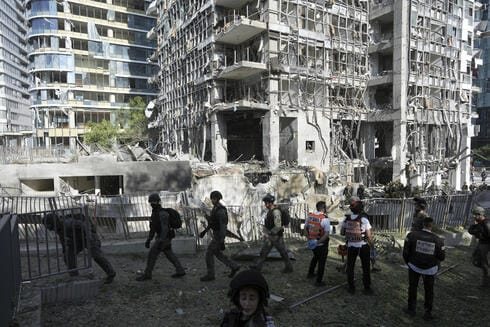

世界苦茶06月19日新闻 | 35条 | 以色列伊朗持续升级中

以色列伊朗持续升级中 | 美联储决定维持利率不变 | 日本罕见通报中国航母动向 | 韩国称朝鲜向俄罗斯增兵 | 中国央行倡议货币多极化
每天三件事：
苦茶数据
美元兑人民币：7.19（昨日7.18，前日7.18）
美元兑日元：145.29（昨日145.07，前日145.00）
上证指数：3362（昨日3380，前日3387）
标普500指数：5980（昨日5982，前日6033）
比特币：104818（昨日105063，前日106860）
布伦特原油：77.38（昨日76.76，前日72.91）
以伊战争
• 以军加沙空袭140死 ：以色列在与伊朗持续交火的同时，继续在加沙地带开展军事行动。当地卫生官员说，过去24小时，以军袭击造成至少140人死亡。路透社报道，加沙卫生部星期三说，过去一天至少有140人死于以军袭枪击和空袭，其中至少40人在星期三的袭击中丧生。医务人员说，以军针对加沙中部和北部迈加齐难民营、泽图恩社区，以及加沙城民宅的空袭，造成至少21人死亡，另有五人在加沙南部汗尤尼斯的一个难民营遭空袭身亡。
• 以色列启动公民撤离 ：由于航空公司纷纷暂停飞往以色列航班，数万名以色列公民滞留海外，当局派飞机接以色列人回国。路透社报道，以色列星期三启动分阶段接运海外滞留公民回国的行动。首架载有塞浦路斯滞留以色列公民的飞机，于当地时间当天凌晨降落在以色列中部城市特拉维夫的机场。这架航班由以色列国营航空公司阿尔埃尔航空执飞。航空公司表明，已安排从雅典、罗马、米兰、巴黎、布达佩斯和伦敦起飞的遣返航班，接以色列人回国。 （翻評：外國人都在離開以色列，以色列怎麼還在把人往國內接？）
• 哈梅内伊誓不屈服 ：伊朗最高领袖哈梅内伊说，伊朗绝对不会向以色列屈服。综合外电报道，哈梅内伊星期三通过国家媒体，发表自上星期五与以色列爆发冲突以来的首次讲话。他在电视主持人宣读的声明中说，伊朗不会接受美国总统特朗普的投降呼吁，不能将和平或战争强加给这个国家。哈梅内伊表明：“了解伊朗，了解伊朗民族及其历史的智者，永远不会言语威胁这个国家，因为伊朗不会屈服。”
• 伊朗离心机设施被毁 ：联合国核监督机构国际原子能机构说，伊朗首都德黑兰两栋用于生产离心机部件的建筑物被摧毁。法新社报道，国际原子能机构星期三在社媒平台X上发贴说，根据机构掌握的信息，伊朗郊区卡拉季的两处离心机生产设施遭到袭击，分别是伊朗离心机技术公司的工作中心，以及德黑兰研究中心。国际原子能机构说，根据伊朗2015年达成的核协议，这两处设施此前都处于国际原子能机构的监督和核查之下。
• 英俄撤离以色列家属 ：以色列和伊朗局势持续升级，俄罗斯和英国撤离驻以色列使领馆员工家属。综合路透社和法新社报道，英国外交部星期三在以色列旅行建议中说，鉴于伊朗和以色列冲突带来的重大风险，英国驻特拉维夫大使馆和耶路撒冷领事馆工作人员的家属，已经暂时撤离。英国外交部表明，英国驻以色列使领馆会继续开展必要工作，包括为英国公民提供服务。
• 以空袭德黑兰核设施 ：以色列军方说，以空军袭击了伊朗首都德黑兰一处制造离心机的设施。新华社报道，以色列国防军当地时间星期三早间发表声明说，以色列空军在过去几小时里，动用50多架战机，对德黑兰地区的军事目标实施一系列打击，其中包括一处制造离心机的设施，这个设施旨在帮助伊朗提升铀浓缩规模和速度。声明称，以色列空军还连夜袭击几处伊朗的武器制造基地，包括一个生产地对地导弹原材料和零部件的设施，以及一个地对空导弹部件制造设施。
• 以伊网络战波及银行系统 ：以色列和伊朗之间的冲突正在蔓延到数字世界，加剧了这两个以网络能力著称的国家之间长达数十年的黑客攻击和间谍活动。本周二，一个亲以色列黑客组织声称对伊朗一家主要银行的破坏性网络攻击负责，据当地媒体报道，以色列对该国关键基础设施发动了全面网络攻击。报道称，该国在过去三天内遭受了超过6700次DDOS攻击。据悉，作为减缓大规模网络攻击影响的措施，伊朗实施了临时互联网限制。周二晚间，伊朗人报告称互联网访问普遍出现问题，许多虚拟专用网络无法使用。客户还报告了银行服务出现问题，包括银行取款机和在线系统。
• 伊朗最大交易所遭黑客攻击 ：区块链分析公司Elliptic表示，伊朗最大加密货币交易所 Nobitex 周三遭黑客攻击，损失超9000万美元。Elliptic指出，被盗资金从平台钱包转移至包含反政府信息的地址，这些信息明确提及伊朗伊斯兰革命卫队，表明这是一次具有政治动机的网络攻击。亲以色列黑客组织“Gonjeshke Darande”宣称对此次攻击负责，并表示将公开该交易所的源代码。Elliptic称，该交易所目前处于离线状态。该组织还宣称对本周伊朗国有银行Sepah的另一起网络攻击负责。
• 伊官媒警告卸载WhatsApp ：当地时间周二，伊朗国家电视台敦促民众从智能手机中移除通讯应用 WhatsApp，指控该应用搜集用户信息送给以色列，但没有提供具体的证据。伊朗伊斯兰共和国广播电视台昨天呼吁伊朗民众从手机中删除 WhatsApp ，称该应用会收集用户个人信息以及 “最后已知位置和通讯内容” 并将其分享给以色列。WhatsApp 在声明中说，担心这些假消息会成为我们的服务在民众最需要的时候被封锁的借口。声明说：“我们不会追踪大家的精确位置，不会记录每个人发送消息的对象，也不会追踪用户之间互传的私人消息。我们不会向任何政府提供大量信息。”
• 特朗普称掌握哈梅内伊位置 ：美国总统特朗普6月17日声称，美国知道伊朗最高领袖哈梅内伊的藏身之处，但暂时没有计划杀死他。特朗普呼吁伊朗“无条件投降”。哈梅内伊18日回应称特朗普的言论“威胁且荒谬”。他说伊朗不是一个投降的国家，美国的任何军事介入都将遭受“无法弥补的损害”特朗普近日暗示美国将更多参与以伊冲突，并向该地区部署了更多的军机和军舰。伊朗外交官警告，美国的介入存在爆发“全面战争”的风险。另一名伊朗官员称，该国将继续以和平为目的的铀浓缩，这显然排除了特朗普所说伊朗放弃核计划的要求。以色列军方称，以色列击中了伊朗用于制造离心机和导弹部件的工厂。与此同时，伊朗发射的导弹越来越少，以色列已放开对民众日常生活的部分限制。伊朗互联网18日晚间据监测已几乎完全中断。
中国新闻
• 中方批G7炒作产能问题 ：针对欧盟委员会主席冯德莱恩在七国集团峰会期间称中国向全球市场转移过剩产能，中国外交部说，中国产业发展靠的是真本事，而不是靠补贴，并指产能过剩本质上是有关国家担心自己的竞争力和市场占有率，意图以此为借口，搞保护主义措施。据《南华早报》报道，冯德莱恩星期一在G7峰会上，指责北京故意在全球稀土供应上制造近乎垄断的局面，并将各国对这一供应链的依赖“武器化”。她还说，随着中国经济放缓，北京正将国内难以消化的补贴过剩产能倾销至全球市场。
• 中新争议洲际导弹试射 ：中国去年向太平洋试射一枚洲际导弹后，新西兰政府指中国刻意淡化事件的严重性，试图误导外国政府。中国官方则回应称，导弹试射属于年度军事训练，事实清楚，无人被误导。解放军火箭军2024年9月25日向南太平洋公海海域发射一发携载训练模拟弹头的洲际弹道导弹，是时隔44年来首次，引起长期主导这片区域安全事务的美国、澳洲、新西兰等国的高度关注。中国官方称，此次导弹发射是火箭军年度军事训练例行性安排。不过，新西兰外交官在写于2024年9月至10月的内部文件中批评这种说法“误导性极强”。
• 中国企业被查或违规营运 ：正在调查中国通讯科技企业是否试图规避在美运营限制的美国联邦通讯委员会说，中国移动未能提供调查所要求的信息和文件，因此可能面临罚款。今年3月，FCC宣布对包括中国移动、华为、中兴通讯、海康威视和中国电信在内的九家中国企业展开调查，以确定它们是否试图规避在美运营限制。上述中企被指威胁美国国家安全，均被列入FCC的调查清单。此前，FCC曾以国家安全为由，禁止中企在美国提供电信服务。
亚太印太新闻
• 泰柬通话录音引争议 ：泰柬边境局势持续紧张，一段泰国首相佩通坦与柬埔寨前首相洪森的通话录音外泄引发新争议。佩通坦说，此事已破坏她对柬方的信任，今后不再私下沟通。在社交媒体流传的通话录音中，佩通坦请求洪森体谅泰国政府面临的国内压力，包括军方不听从政府，并指是陆军第二军区司令本辛擅自决定调整口岸运行，更称本辛是“疯子”和“泰国政府的敌人”，请洪森不要认真看待本辛的讲话。此事引发舆论关注，佩通坦星期三召开记者会解释，她与洪森的对话只是谈判伎俩，旨在缓解泰柬边境紧张局势，与泰国国内政治无关，并重申她与军方没有分歧。 （翻評：這件事兒起碼說明兩件事，現在柬埔寨首相，洪森的兒子洪馬內是傀儡；泰國首相佩通坦也是傀儡。）
• 台反罢免活动登场 ：台湾绿营发起的大罢免行动将进入第三阶段，前中广董事长、蓝营“战斗蓝”发起人赵少康星期三宣布，将于星期六在台北举办反罢免活动，并邀请前不久走访中国大陆的知名网红“馆长”陈之汉助讲。综合《联合报》、中时新闻网和三立新闻网报道，赵少康星期三上午举办记者会说明“北北基反恶罢团结大会”。他说，由于台湾的中央选举委员会星期五要决定哪天举行罢免投票，以及审议哪些人进入第三阶段投票，所以选择星期六举行反罢免活动。赵少康强调这场反罢免活动就是要造势，要拉抬国民党反罢免的气势，并呼吁支持者踊跃出席。他进一步说，反罢免活动将邀请台北市、新北市和基隆市遭罢免的立委以及民众党立委张启楷、馆长、国民党主席朱立伦、台北前市长郝龙斌、国民党台北市党部主委戴锡钦、党外联盟发起人郑丽文、李孝亮等人出席，向民众说明反恶罢活动。
• 赖清德表示，朝野简报流局 ：台湾总统府原定星期三首度举行的朝野国安简报，因蓝白两党主席接连婉拒出席而流局，台湾总统赖清德对此感到“可惜”，称面对中国大陆对台威胁，政党可以竞合但不能零和。也是民进党主席的赖清德星期三在民进党中常会上说，当天上午原本邀请国民党主席朱立伦和民众党主席黄国昌到总统府，一起听取“重要国家安全情势专案简报”，可惜未能如期成会。他说：“我之所以要进行这场国安简报，目的就是想透过国安团队对两位在野党主席进行说明，让他们可以清楚了解国家当前所面临的严峻情势。”
• 日本公布中国航母动向 ：日本国防部罕见公布中国辽宁舰与山东舰本月稍早在日本周边海域活动的详细航路。日本本月初首次发现两艘中国航空母舰辽宁舰和山东舰同时在太平洋活动。北京随后证实，两个航母编队赴西太平洋等海域开展训练，“不针对特定国家和目标”。日本国防部统合幕僚监部星期二公布这两艘航母自5月底以来的活动轨迹，并详细说明其在日本周边海域的航行情况。由于日本鲜少公开外国军舰的具体动态，此次举措颇为罕见。
• 台美深化国防合作 ：台湾国防部长顾立雄与美国众议院访台团会面时，感谢他们支持台湾民主、自由和安全，并希望台美持续深化交流，共同创造区域的和平稳定。根据台湾国防部新闻稿，顾立雄星期二接见美国联邦众议院“国会台湾连线”共同主席贝拉及访团成员。顾立雄感谢访宾对台湾民主自由的肯定支持，并期望台美能够持续深化交流，共同创造区域的和平稳定。
• 韩日G7峰会场边会谈 ：韩国总统李在明借出席七国集团峰会之机，在加拿大同日本首相石破茂举行会谈。韩联社报道，李在明和石破茂星期二谈了约30分钟，双方商定不断深化韩美日三边合作和韩日双边合作，携手应对朝鲜问题等地区面临的地缘政治危机。韩国总统室介绍，两国元首就如何在瞬息万变的国际局势中维护地区和平稳定、使国家利益最大化的方案深入交换意见，并商定保持紧密合作。双方重申重启“首脑穿梭外交”的意愿，并同意为此推动韩日之间的磋商不断取得进展。
科技新闻
• Meta高薪挖角OpenAI员工 ：OpenAI首席执行官奥尔特曼透露，脸书母公司Meta近期向OpenAI员工开出高达1亿美元签约奖金，企图挖角，以加强其人工智能的人才储备。根据路透社报道，奥尔特曼在星期二播出的播客节目《Uncapped》中作出上述发言。他说，Meta近来向OpenAI团队的许多成员开出“巨额报价”，除了签约奖金外，还有年薪远超1亿美元的合约。奥尔特曼说：“目前为止，我们优秀的员工们，都没有接受他们的挖角。”
• 中国军方投资AI用于作战 ：据一份新的报告称，中国的情报机构已在人工智能领域投入巨资，创建新的工具来加快分析速度，提供威胁预警，并有可能在战争期间帮助制定作战计划。研究人员对中国人民解放军的专利申请、公开合同和其他材料进行了评估，以便更好地了解中国军方和情报部门如何投资于人工智能。研究发现，中国可能正在混合使用各种大语言模型。包括Meta、OpenAI、DeepSeek、智谱AI等公司的模型。去年10月，中国兵器科学研究院提交了一份利用各种形式的情报来训练军事模型的专利申请。研究报告表示，该申请讨论了大语言模型的使用方式，比如制定行动计划，帮助战场情报分析师分析友军和敌军。
• 特朗普顾问萨克斯称中国善于规避芯片限制： 白宫加密货币和人工智能事物主管戴维·萨克斯警告称，中国已经越来越擅长规避美国的出口管制，其半导体设计能力最多落后美国两年。萨克斯周三接受采访时表示，美国应该警惕华为技术有限公司正迅速追赶中国以外的竞争对手。他表示，深度求索今年早些时候推出的突破性的人工智能模型显示，即使面临出口限制，中国依然能够在关键技术上取得进展。萨克斯说：“在深度求索出现之前，人们认为中国的AI模型落后数年，但我们现在发现，它们只落后几个月。”萨克斯还警告称，若美国对向盟友销售的AI芯片实施过度限制，可能会在不知不觉中为华为等中企创造机会，导致其他国家转向中国技术。
财经新闻
• 中国倡议货币多极化 ：中国高级别金融官员在一年一度的陆家嘴论坛上，阐述对多极化全球货币新秩序的愿景，释放中国参与全球金融治理、进一步推动人民币国际化的信号，并重申稳步扩大金融制度型开放。中国央行行长潘功胜星期三在上海举行的陆家嘴论坛上指出，国际上对改革货币体系的讨论越来越多，其中一个方向是弱化对单一主权货币的过度依赖。美元自二战以来长期在国际货币体系中维持主导地位，但特朗普政府年初上台后，美元兑欧元、英镑和瑞士法郎的汇率下跌逾10%；美元指数今年也下跌约8%，接近三年低点。
• 美联储连续维稳利率 ：美国联邦储备委员会宣布将联邦基金利率目标区间维持在4.25%至4.50%之间不变。这是美联储货币政策会议连续第四次决定维持利率不变。美联储决策机构联邦公开市场委员会星期三结束为期两天的货币政策会议，一致投票决定将联邦基金利率目标维持不变。新华社引述委员会的声明说，近期指标显示，美国经济活动继续以稳健的速度扩张，失业率保持低位，劳动力市场状况较稳固，但通胀率仍然略高。声明指出，“经济前景的不确定性有所减弱，但仍处于较高水平。”联邦公开市场委员会将继续监控风险因素，并准备视情况调整货币政策立场。
• Labubu被罚物品拍卖 ：一批被中国海关罚没的Labubu玩偶、手表等物品在平台拍卖，经过多轮竞价，最终以19.16万元人民币成交。据报，这批物品当中有39个Labubu。据红星新闻的微信公众号消息，在星期二上午，一批海关罚没的物品在京东资产交易平台拍卖，起拍价格为11.46万元。红星新闻引述不具名的平台工作人员说，这批物品共有39个Labubu，以及三只手表，四个拍立得，一个包等，价格是打包价。在这39个Labubu中，其中一款有九个、另一款有30个。
• 美国或加征东南亚关税 ：研究机构野村控股经济学家说，尽管美国积极推动贸易谈判，但在发现中国疑似通过东南亚国家转运商品以规避关税后，美国可能会继续对该区域维持较高的关税税率。野村经济学家帕拉奎利斯等人在星期一发布的报告中指出，美国可能会对东南亚征收平均15.5%的关税，以遏制转运行为。他们认为，这一区域愈发被视为中国规避美国关税的第三方通道，这可能会削弱美中贸易谈判取得的进展。
• 中国稀土出口创五年新低 ：受出口管制措施的影响，中国5月稀土产品出口跌至五年来新低。彭博社根据中国海关数据计算得出，中国5月稀土产品出口量同比下降61%至2117吨，为2020年2月以来最低水平。稀土产品类别有别于矿物和金属，通常以磁铁为主。今年4月，中国宣布对七类中重稀土产品实施出口限制以反制美国关税措施，打乱了汽车、航空航天、半导体及军工等多个行业的关键供应链。中国当月的稀土出口量已出现大幅下滑。
• 刘强东推动稳定币全球化 ：中国电商巨头京东创始人刘强东说，京东希望在全球所有主要货币国家申请稳定币牌照，以此实现全球企业间的汇兑并将跨境支付成本降低90%，效率提高至10秒之内。综合路透社和第一财经报道，刘强东星期二在一场分享会上说：“现在企业之间汇款平均需要两至四天时间，成本也挺高。B端支付做完之后，我们就会朝C端支付渗透，希望有一天大家在全世界消费的时候可以用京东稳定币来支付。”稳定币是一种通过美元、港币等锚定资产或算法调控使价格稳定的加密货币。截至今年5月3日，全球稳定币的发行规模超过2400亿美元。
• 野村预测中国经济放缓 ：瑞银亚洲经济研究主管、首席中国经济学家汪涛指出，基于去年基数较低和当前增长势头较为稳健，中国第二季度GDP预计将同比增长4.5%至5%，但下半年经济增速可能将明显放缓。据《香港经济日报》报道，汪涛补充称，额外的政策支持措施可能有助于稳定第四季度经济增长。她指出，在抢出口及其相关生产计划的带动下，加上政策支持措施发力，今年前五个月出口、工业生产、社零和固定资产投资增速整体维持相对稳健。不过，随着抢出口效应逐渐减退、财政补贴接近尾声，下半年经济下行压力可能加大。
• 石破茂坚拒草率达成协议 ：日本首相石破茂在七国集团峰会闭幕时说，在贸易谈判中，日本将优先维护国家利益，不会仓促与美国达成协议。彭博社报道，这是石破茂去年10月就任日本首相以来首次出席七国集团峰会，但众人都把焦点放在他和美国总统特朗普在加拿大进行的30分钟对话。石破茂星期二离开加拿大时还未与特朗普达成贸易协议，也没有一个与美国达成协议的明确途径。石破茂此前说，两人星期一在加拿大的会晤是日美贸易谈判的一个潜在里程碑。
俄乌战争
• 金正恩会见俄安全高官 ：朝鲜领导人金正恩星期二会见了到访的俄罗斯联邦安全会议秘书绍伊古。朝中社星期三报道，金正恩欢迎绍伊古在朝俄《全面战略伙伴关系条约》签订一周年之际访问朝鲜。双方在会谈中讨论了当前合作事项和远景计划。报道说，金正恩“出于对特别军事行动以及库尔斯克州当前情况的正确理解”，确定了在两国条约范围内朝鲜的合作内容，同意了相关计划，并讨论了必要的合作方案。
• 韩国称朝鲜增兵援俄 ：韩国指朝鲜正在向俄罗斯派遣更多军队。路透社报道，韩国外交部星期三说，朝鲜向俄罗斯增派更多军队，这明显违反联合国制裁，并呼吁朝鲜立即停止与俄罗斯的合作。朝鲜今年4月28日首次承认派兵支持俄罗斯对乌克兰的战争，声称朝鲜军队帮助俄罗斯重新控制了库尔斯克州被乌克兰入侵的地区。朝鲜劳动党中央军事委员会在一份书面声明中说，派兵参战符合朝鲜和俄罗斯去年签署的共同防御条约。
其他新闻
• 英吉利海峡偷渡激增 ：英国媒体报道，越来越多偷渡客试图从法国横渡英吉利海峡到英国，尽管法国执法人员加紧截阻，但道高一尺魔高一丈，人蛇团伙改用“水上德士”将偷渡客送出海。英国广播公司报道，由于人蛇团伙改变策略，偷渡到英国的人数可能激增。据报道，人蛇团伙现在使用小橡皮艇，如变相的“水上德士”，沿着海岸线慢慢行驶，沿岸接载愿意付费的偷渡客。
• 特朗普政府恢复学生签证预约，但要进行社媒审查 ：美国国务院一名高级官员表示，美国正指示其海外使领馆恢复学生签证申请，但要求申请人公开其社交媒体资料以供审查。该官员表示：“为了方便审查，所有F、M和J非移民签证申请人都将被要求将其所有社交媒体资料的隐私设置调整为‘公开’。之后，使领馆可以恢复安排F、M和J类签证的申请面试。”。
• 民调显示，匈牙利反对党蒂萨党领先欧尔班领导的青民盟15个百分点： 民调机构Median周三发布的一项调查显示，匈牙利主要反对党蒂萨党在已确定选民中的支持率领先总理维克托·欧尔班领导的青民盟15个百分点，在明年大选前，两党之间的差距进一步扩大。彼得·马加尔领导的中右翼蒂萨党对民族主义者欧尔班15年的执政构成了最大的政治挑战，而他的政府也面临着经济困境。